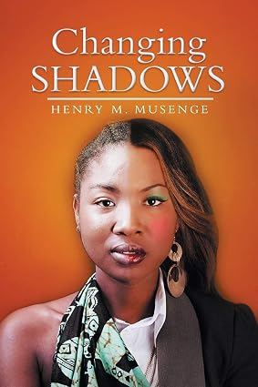

Epic fiction, unforgettable worlds, and characters that live beyond the page.
Explore Books
Changing Shadows is a story about cultural change. Starting with a typical Zambian rural setting, the book swiftly unfolds to an urban and sophisticated setting depicting discords to human relations, revealing the dilemmas of those caught in the middle. Mwila clashes with an outdated tradition, annoying many traditionalists in the process. Although her experiences leave indelible marks on her character, Mwila's stint in London strengthens her resolve. She returns home more confident, cultured, and different, annoying the conservatives and traditionalists in the process. The climax is a confrontation between the two factions. 'Gripping and absorbing, sad and, at the same time, delightful, most certainly a story of our times' (Women"s Exclusive) 'The novelette indirectly illuminates aspects of Zambian life such as the vulnerability of women and the drift to urban centers' (Article, Department of literature and languages, UNZA) 'A commendable work clearly reflecting the conflict within the changing trends of the Zambian society' (Feature writer, Zambia Daily mail)
Buy NowHenry M’ule Musenge holds a Bachelor of Science degree from the University of Zambia, as well as a Master’s and PhD from the University of Strathclyde in the UK. He has worked in various senior positions. He is the author of ‘Changing Shadows,’ which has been used as an English set text in Zambian schools. His other novels include ‘Flames of Gondola’ and ‘Distorted Legacy.’ His fourth manuscript, ‘Tossing the Coin,’ is now under submission.